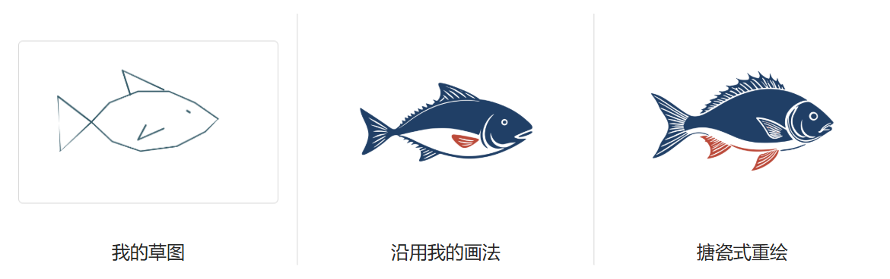

从鱼盆到纹样
要让一条鱼带有工业设计的出处，先说清它从哪件东西学了哪一笔、哪一层色，以及这笔画原本放在什么位置。
团队讨论稿 v0.1 · 图形分析和 API 指令为项目提案，尚待馆方、设计师复核。01 现在这条鱼究竟依据什么？

核对当前 pattern-grammar.js、sketch-form.cjs 和百炼代理：可选研究样本是花鸟盆、牡丹盘、红字花盆。手绘重绘先辨认草图，再把主体、姿态、构图和所选样本的文字设色规则交给模型。确认单色稿后，程序把黑、红分版映射为选定的两种颜料。旧稿因此可以准确识别“鱼”，却系统性地趋向剪影、刀口和点色。这个两色决定由我们写入，与鱼纹的厂别、年代或具体工艺没有绑定。
例如当前红纹设色的对照物有真实馆藏号 98/126/111，馆方编目为石家庄制、厂商不详，白底粉花、中心红字，口边红蓝分带。它能支持“中心与口沿分开装饰”这条观察，不能证明鱼的画法。该馆图像还另设授权申请。Powerhouse 实物记录
| 要说明的关系 | 目前的材料能支持到哪里 |
|---|---|
| 上海工业博物馆馆藏 | 本次附件、现有程序与查到的资料中，尚无一件鱼盆具有该馆可核对的藏品号、登记卡或书面确认。记为“待对接”，不可从项目服务对象推断藏品归属。 |
| 中华珐琅厂产品 | 普陀档案材料在中华珐琅厂条目列有立鹤牌、纪念西湖博览会的茶盘和圆形饭盒。可据厂名、牌号、器种查厂样或底款。另建“中华美术珐琅厂”实体，按文献登记沿革。即便查到同一时期的上海鱼盆，也必须单独核实制造者。普陀区苏州河近代工业商标文化收藏集萃 · 搪瓷工业协会史料 |
| 上海行业工艺 | 久新搪瓷厂末任厂长谢党伟回忆喷花工作，用金鱼浅腹和一幅鱼稿多支喷枪的实例说明分色与色阶。这是可以落实为画法的证词。应署“久新从业者口述”，不可反推某只无款盆出自久新或中华。《文汇报》采访谢党伟 |
| 上海档案线索 | 1957 年“睡莲金鱼”获奖见行业史料，目前只核到文字。保留为查图关键词，物种、数量、颜色、花稿作者和厂牌均不能靠标题补全。虹口轻工设计原稿展提供收藏与研究机构线索，仍需调阅具体图版。行业史料 · 虹口区原稿展记录 |
02 把同是“鱼”的三种画法拆开看
下图是项目绘制的构图笔记，仅用色带表示主次、方向和位置。原物的鱼眼、鳞片与色阶请看所链接的照片。来源编号沿用附件顺序。
红沿盆，鱼身围出一块空地
暖色大鱼沿盆心弯成开放的弧。弧内有红字，浅蓝水纹落在主体下方，红沿下面另有一圈细带。鱼、字、水、边带各占一处。
可借 用主形围出空处。用户没要题字，空处可以直接露釉，无需补花或补字。
看原始配图 1
蓝沿盆，色差组织鱼群
清单暂称“双鱼”，在人民网原图中能分出一尾较大的红鱼和两尾深色鱼。三条身体各有弯势，淡青绿的水草或水色填在局部，边缘留有更安静的一圈。
可借 主鱼与陪景靠明暗和疏密拉开。研究的是关系；用户画一尾时，不能自动复制成三尾。
看原始配图 2
蓝鱼盘，局部露白做鳞
盘心是一尾弯曲的蓝鱼，背身有短小的露白，长鳍和尾端伸出大色块。盘缘另有断续的蓝弧，与鱼身之间隔着盘面的白。
可借 只在身体局部排鳞，头、鳍和尾分别处理。照片支持这个可见关系，不能单凭边缘判定具体版数、厂牌或年代。
看商品原页及背面照A1、A2 出自人民网原文第 2 页。本文稍后展示的故宫鱼纹陶瓷属于别的材料组。原稿展、行业口述与这两只盆之间均未建立逐件对应关系。
03 让每条规则都能指回一处证据
- 登记原物。分别记录持藏机构、登记号、制造者、年代依据、摄影者、来源页与图片使用范围。把“刊登过”“确认为某厂”“馆藏”“可上传模型”“可公开结果”分栏。缺资料填未知，不能让 AI 猜补。
- 逐区读图。同一实物的正面、斜侧、底款与局部共用一个编号。先标盆心、斜壁、口沿，再圈出每一尾鱼的轴线、腹背、尾鳍、鳞区、陪景及露底区。把磨损、反光、投影、器壁曲率另设遮罩。照片可说明可见色相和边缘过渡，不能直接给出釉料配方、原始色值和套版次序。
- 建立规则卡。每条只说一个决策，写明适用的工艺、题材、区域与例外，并记录图号和标注区域。区分“眼见”“工艺口述”“团队推定”“当代设计选择”。规则有草拟、复核、可用于生成三个状态；同题材的反例也要留存。A1 多色、A3 单主色，各自成立，不做平均配色。
- 分别读取用户与原物。照片提取可辨特征和关系，剔除背景；文字明确主体、数量、动作，意图不清时只追问影响结果的一项；手绘看姿态、比例、哪一笔最有辨识度。用户选艺术化可放开轮廓，仍保留约定的特征。已授权的原始纹样还可直接进入编辑器。
- 编译一次生成委托。从已审核规则中挑一套主参考，按目标区域选排布，再加入用户必须保留的特征。用户明确的数量优先于原物数量；来源不支持的历史断言不得写进提示词。照片外发权限未知时，研究阶段只看原页；获准使用的规则摘要可以单独送审。生产系统的可调用集合由团队明确批准。
- 两次判断。先用轮廓稿检查题材、动作和留白，再看色稿检查色层、陪景、缩小可读性与上器位置。黑白稿只是一次构图检查；喷花色稿需要保留色阶。把已确认版本、引用的规则、实际 AI 步骤与审核记录写进再生档案。
后台可以借用 Annotorious 区域标注，参考 IIIF 局部注释示例 为“浅腹”绑定图片区域。SAM 2 可辅助勾出鱼与水草，连在一起的尾鳍、反光和淡喷边缘仍须人工改。ControlNet 的草图条件可作为姿态约束的实验对照，能保留形态不等于能提供厂史依据。这些是工具参考，本轮没有新增系统依赖。
04 把研究改写成 API 能执行的委托
以下是一条试验假设。把久新喷花口述中的浅腹方法，用于新画的一尾向右游的鱼；参考 A1 将陪景留在盆心下方。这是跨样本设计，两个来源分别署名。原照片不进入请求。
{
"sourceObjectId": null,
"evidence": ["A1/盆心·鱼下水纹", "JX01/谢党伟口述·鱼腹深浅"],
"museumStatus": "外部比较研究，未核为工博馆藏",
"ruleVersion": "fish-study/0.1-draft",
"inputIntent": {"subject":"鱼","count":1,"facing":"向右","keep":["叉尾","略上扬的头"]},
"application": {"medium":"日用搪瓷","vessel":"盆","zone":"内底"},
"marks": {"observed":"鱼下浅色水纹","reported":"鱼腹色浅","chosen":"暖红背、浅橙腹"},
"constraints": {"rim":"另层处理","allowSubjectCopies":false,"referenceImageUpload":false},
"review": {"approvedForProduction":false,"signedBy":null}
}
识别请求 “只观察本次用户输入。返回主体、数量、朝向、最有辨识度的两处特征和拿不准的部分。区分作者明说的内容与视觉推断。不得推断厂名、年代、工艺或寓意。”
设计请求 “读取已批准的规则摘要与用户特征。对每项输出写出具体改法及规则 ID。遇到‘原物多鱼／用户单鱼’时，保留单鱼，把动势转移到鱼尾和水纹。若没有匹配证据，返回缺哪种样本，停在研究草案。”
绘图请求示例 供团队审阅，尚未发送
为浅色搪瓷盆的内底设计一枚原创单鱼主纹。鱼向右游，头略上扬，保留叉尾。让尾身顺着盆心圆势回弯，在鱼腹前留出完整的一片釉白。主色从暖红鱼背过渡到较浅的腹侧，眼部收深，尾瓣的颜色向末端减弱。鱼下用一小组浅蓝水纹承接游向，留出明显空隙。输出完整平面纹样，背景可去除，口沿另行设计。保留柔边色阶；不加第二尾鱼、文字、厂标、金色隔线、器物照片或镜面高光。
“暖红背、浅橙腹、叉尾”是本次委托的色彩选择与用户意图，不能在展签上写成某厂原图。若选 A3 蓝鱼研究，改给蓝色主面、局部露白鳞与长鳍弧线，去掉暖色晕染指令。口沿作为独立区域测试，器型选杯时还要决定杯身朝向、柄旁留白与接缝。
百炼对接边界。上面 JSON 是我们服务端的研究记录，组装后才转为模型支持的文本或已授权图像输入。服务端保存证据与版本，不能依赖模型返回的出处。在当前代码中，即便换掉提示词，手绘成品仍会经过固定两墨映射。要验证喷花分支，下一轮须为色稿单独保留透明度与色阶，同时保留双色印花分支用于对照。
05 同一套研究方法，怎样换题材、换媒介
| 新任务 | 可沿用 | 需要另立的规则 |
|---|---|---|
| 鱼 → 牡丹，仍用搪瓷盆 | 材质档案、区域标注、款识与授权流程、中心和口沿分区。 | 新建花心、瓣层、叶片与露底标注。采访里有牡丹内深外淡的喷花例子，可在对应花样中比较。鱼鳞、长尾、鱼腹与水纹退出规则集。工艺访谈 |
| 手绘小狗，找不到同题材厂样 | 保留原狗的姿态，借已审核的同工艺色阶或口沿分工。 | 标成“当代题材＋工艺借鉴”，不能为它编造一件历史狗纹。证据只支持喷花时，就只继承这一条。 |
| 鱼盆 → 鱼纹邮票 | 来源与使用记录、鱼的数量、动作、识别特征及核验流程。 | 选邮票自身的证据。邮票印制局登记 1960 年特38《金鱼》为十二枚、影写版。看同套票如何在小幅矩形中区分品种，让鱼形、底色与面值区协调。做成邮票题材设计习作，预留排字区，厂名、面值、齿孔与官方发行信息单独处理。盆沿和露釉不随鱼移植。特38 原始票图及印制记录 |
跨媒介试题。让刚才那一尾右游、叉尾的鱼改作纪念票样。第一次只给模型矩形画幅、鱼的特征、低干扰背景和左上留字区，先缩到实际票幅判断鱼头与尾部能否区分。文字与票边由排版层处理。再生档案此时有两条出处：题材转译的鱼盆，版式研究的邮票。
06 团队怎样决定这套方法是否成立
先做一张鱼盆证据卡，再决定是否扩大题材。向馆方索取同一编号下的正视、斜侧、底款和局部，以及登记资料、已知厂牌、可使用范围。有厂样或喷花版时优先与成品配对。若暂时只能确认立鹤牌饭盒，可以用它做“中华珐琅厂来源”示范，鱼纹继续以“上海行业研究”展示。两条线可以并行。
最小对照实验。用同一张草图、同一朝向和同一盆心区域，做旧版两色、A1＋口述喷花、A3 蓝鱼露白三组。每组至少两份，同条件记录模型版本、输入和输出，第一轮先只评平面稿，再放到同一器型与光照下复评。另用一张牡丹图或一张邮票任务做反例，检查是否错误带入鱼鳞或盆沿。
创作者看结果，团队验证规则
日常创作只需决定下一步。手绘结果沿用「对照我的草图」，照片可看原图，文字可回看原句；按需打开。满意就采用，想改就回到现有编辑入口。参考器物与这次借用的画法可在「再生档案」中查看。原物图按授权范围展示。博物馆体验项目已有类似做法：访客可以先创作，再回看收藏的物件与个人设计。Cooper Hewitt 的 Pen 项目 · Google Arts & Culture 的 Art Transfer
内部先验题材，再验工艺。为测试输入预先写出可观察的约束，例如文字明确说“一尾、向右”，或测试草图把鱼尾画成明显的叉形。题材、数量、方向、稿件版本可以逐项核对；没有表达的个人偏好保留为未知。设计师独立打乱顺序比较同题候选，圈出腹侧色阶、局部露白、主纹与口沿的关系；馆方或工艺研究者核查这些主张对应的原照区域或工艺记录。有分歧就保留分歧和反例。机器可辅助发现漏鱼、多鱼、方向反转；归属及工艺解释由有依据的人复核。相关生成评测也区分主体保留与指令遵循。DreamBench++
另外招募的试用只给任务。例如“用这张草图做一个你愿意留下的杯子”。观察参与者能否找到上器预览、需要时改回原稿、完成保存，以及在哪一步需要帮助。在明确同意的测试里记录卡点即可。采用次数说明某版被选用；重做可能只是想探索。两者都不能直接换算成“理解文化”“喜爱程度”或“忠于原意”。如果研究目标是学习，再另设自愿的研究环节。GOV.UK 可用性测试方法 · Google PAIR 反馈与控制
扩展题材前，分别看三份证据：明确要求有没有跑偏、媒介规则有没有在实物上找到依据、创作者能不能顺利采用或修改结果。鱼数错误、归属失实、未经允许传图直接退回；真实量产另需打样核准。
研究范围为附件与公开材料。本轮没有调用生图 API、训练模型或修改 H5。页面中的构图笔记可离线查看；原照点链接访问。